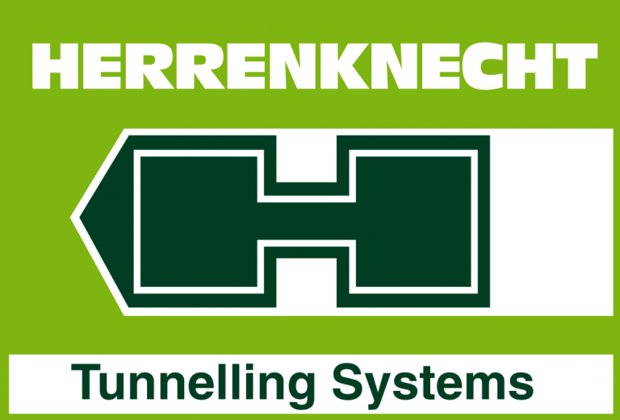
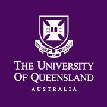

Herrenknecht Australia
Undergraduate Engineer
08/2022 to Present

- Provided high-quality engineering services for multiple major tunnelling projects across Australia, including Cross River Rail, Sydney Metro, and West Gate Melbourne.
- Responsible for contributing to mechanical design and prototyping using CAD, designing electrical systems, programming PLCs, procuring off the shelf and manufactured parts, and effectively communicating with clients to ensure project success.
- Gained a strong understanding of the complexities and challenges of tunnelling projects, and I was able to make valuable contributions to each project's success.
The University of Queensland
Academic Tutor
02/2023 to Present

- Leading tutorials and laboratory exercises for 3rd year electrical engineering students in ELEC3004: Signals, Systems, and Control.
- Creating learning content through TeX, MATLAB and embedded system programming to reinforce understanding of key topics.
A-Team Tuition
Academic Tutor
01/2021 to 08/2022
.png)
- Tutoring specialists and methods mathematics, physics, and chemistry to a wide range of students ensuring effective and efficient learning. Writing weekly reports on learning goals and progress and communicating with parents and teachers.
- Led a tutor group of high achieving Marist College boarding students inspiring collaboration and active learning through engaging activities.